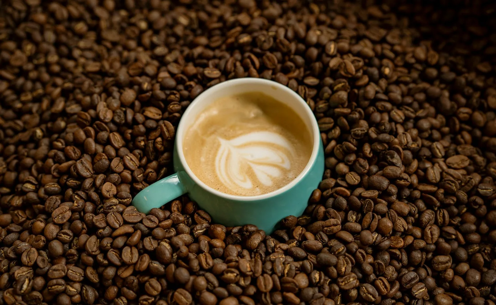
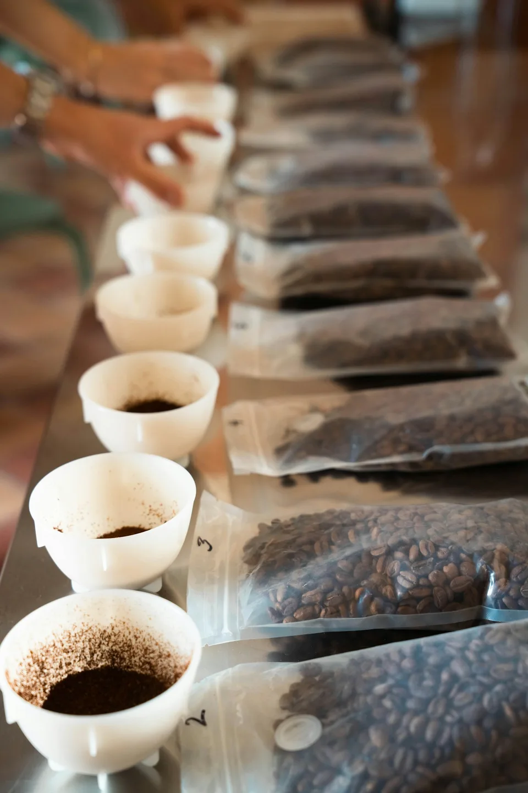

Coffee roastery
Coffee worth grinding fresh.
A coffee collection for the way you already brew, from the first pour-over to the last stovetop cup.
Find your roast
Three ways to brew
Choose a roast by what you like in the cup.

Early Light
A light roast with citrus and a clean finish. Start with a paper filter.
House Roast
A medium roast with cocoa and toasted sugar. A good fit for a French press.
After Hours
A darker roast with a full body. Try it in a moka pot.